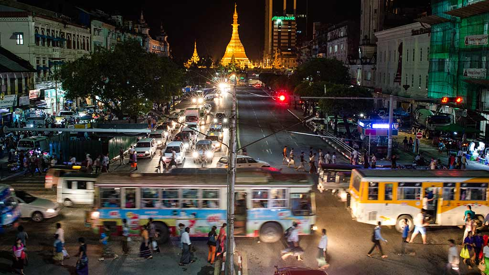
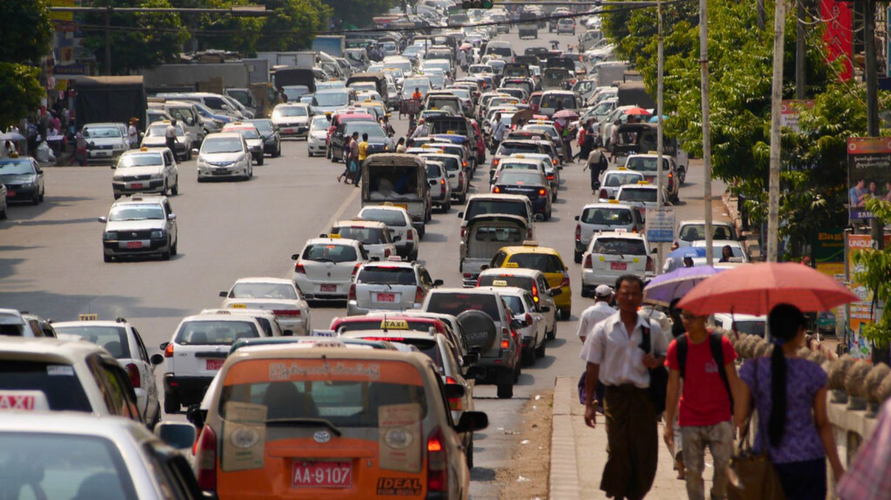

Transportation in MYanmar
The main transportations in Myanmar are bus, taxi, plane, boat, car, bike and motorbike. |
Problems of transportations is in Myanmar, 20 million people lack basic road access, says ADB's Myanmar Transport Sector Policy Note. Most rail lines and 60% of Myanmar's highways are in poor condition. In 2014, 4,300 people died on Myanmar's roads, twice as many as in 2009. In the last 4 years, the number of vehicles in Myanmar has doubled. |
Main transportation is Bus for the whole country. Comfortable coach are well developed all over the country. Fees of bus ticket are quite fair, around 15 USD or less depend on the distance. |
The four best ways of travelling around Myanmar are by air, boat, bus or rail. Flying between cities is popular among westerners, while cruising is enjoyable. Buses are cheaper, simpler and faster than trains. |
Popular ways to some of the most popular ways to travel in Myanmar are by bus, train, plane and even by boat, all of which are easy to purchase tickets for. Flying is the best option if you want to travel quickly, although it tends to carry a higher price tag, where buses and trains are cheap and relatively reliable. | Tourism has the potential to lift communities out of poverty, as it has in other countries in the region. |
|  | ||